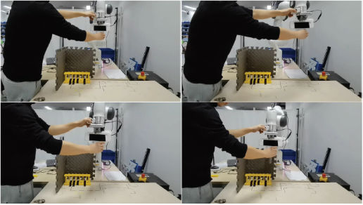
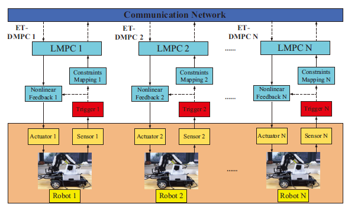
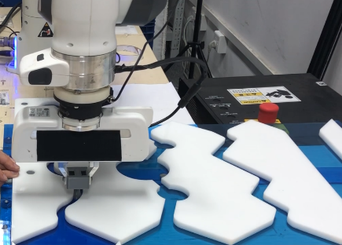
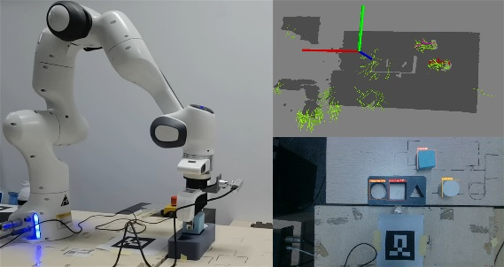

Research
Human-behaviors learning
|  | Human-behaviors learning acts as an important role in the human-robot collaboration. It can be used to increase the cognition of robots to humans, and thus increase the collaboration safety, efficiency. Moreover, it can also be directly used for robot imitation learning. Human-behaviors are always encoded by dynamic systems (DSs), and according to the different types of the learned DSs, human-behaviors learning algorithms can be divided into two types. The first type learns non- autonomous DSs (N-ADSs) where behaviors are driven by the time. This type gains high reproduction accuracy with sacrifice of the flexibility. Moreover, it also inherits disadvantages of regression learning, such as the model expressive limitation and demands of manually feature design, etc. Using non-parametric learning approach might solve these issues well. The second type leans autonomous DSs (ADSs), and the stability of the learned ADSs are mostly cared. However, there exists contradictions between the system stability, model accuracy and model generalization capacity. A feasible way to handle these contradictions is learning data-driven Lyapunov functions.
|
Distributed predictive cooperation control of MASs
|  | Recent years have witnessed a thriving development of multi-agent systems (MASs) for its advantages of increasing efficiency, robustness, and flexibility in practical applications, such as power systems, traffic systems, manufacturing systems, and economic systems. In multi-agent system, each agent shares system and decision information with its neighbors via a communication network and cooperates to complete common tasks. Due to the ability to effectively deal with constraints and utilize the prediction information obtained by interacting with neighboring agents to estimate the future behaviors of neighbors, distributed model predictive control (DMPC) is widely used in multi-agent systems. However, the works mentioned above are implemented in a time-triggered manner, that is, the updating of system measurement and control sequences are performed periodically. This may give rise to unnecessary communication and computing resources scarce in networked multi-agent systems. In addition, how to design a novel event-triggering condition to effectively reduce the consumption of communication and computational burden of the distributed MPC while ensuring the basic performance of multi-agent systems is an important issue worthy of attention.
|
Robot compliant control
|  | Robotic tasks with rich physical interactions, such as polishing, assembly and human-robot collaborations, propose demands for the robot compliant property to ensure operation safety. However, to provide the desired compliant property for robots, we will face two challenging problems. The first one is that we need to accurately establish robot dynamic models, based on which the compliant control could be designed. Offline identification approaches suffer from the accuracy and generalization limitations, and online learning approaches with real-time constraints will be more suitable. The second one is the contradiction between the robot compliance and the tracking accuracy. A useful way to handle this issue is adapting a strategy to adaptively trade-off the robot compliance and accuracy, such as using variable impedance control.
|
Visual servoing
|  | Visual servoing can dramatically expand the application field of the robots. To enable visual servoing, we will face two problems. The first one is the visual estimation for 6-D object-pose. We use variational inference and convolutional neural network to handle this issue. The second one is the control problem, that is how to utilize the estimated 6-D object-pose to control the robot to complete the task. To consider the servo safety and efficiency, we design learning-based control algorithms, that is combing the adaptive capacity of learning algorithms and the stability property of control theorems to achieve high-efficient and safe control.
|
Slam
 |
Slam is used in the Localization and navigation tasks of mobile robots, such as service robots and transportation robots. SLAM can be divided into laser SLAM and visual SLAM. SLAM can make robots realize it position in the environment, and achieve independent and safe completion of the specified tasks. However, laser-based SLAM and camera-based SLAM have their own strengths and drawbacks. When using laser radar to estimate the position of the robot, the position of the robot can be accurately determined according to the laser radar. However, it is difficult to estimate the pose in environments such as a large space or long corridors without a variety of observations, since the depth information obtained from the laser radar does not change over time and will be considered featureless. Another vision-based SLAM that is able to build maps by using direct methods instead of bundle adjustment of features. But cameras are sensitive to lighting changes and take a long time to calculate, and errors can occur during robot localization process. An effective way to solve this problem is to use the fusion of laser-based SLAM and visual-based SLAM to improve the effectiveness of the algorithm and the positioning accuracy of the robot. |